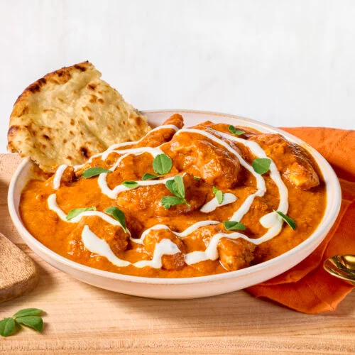

return to home
butter chicken recepie

Butter chicken (Murgh Makhani) is a classic Indian dish featuring spiced, tender chicken simmered in a rich, creamy tomato sauce finished with butter and aromatic spices. It usually takes about 35 to 60 minutes of cooking time (plus marination) and pairs best with naan, roti, or steamed rice
- boneless chicken
- Thick yogurt
- Lemon juice
- Ginger-garlic paste
- Kashmiri red chili powder
- Garam masala: 1 to 2 teaspoons
- Turmeric powder: 1/2 to 1 teaspoon
- Ground cumin & coriander: 1 teaspoon each
- Salt
- Cooking oil: 1 tablespoon (for searing)
Steps to Make
- Marinate the chicken: Coat boneless chicken pieces in yogurt, ginger-garlic paste, Kashmiri chili powder, garam masala, and salt for 15–30 minutes.
- Cook the chicken: Pan-fry, grill, or bake the marinated chicken until cooked through and slightly charred, then set aside.
- Sauté the aromatics: Heat butter and oil in a pan, then cook chopped onions until soft before stirring in ginger-garlic paste.
- Simmer the masala: Add tomatoes, cashews, chili powder, garam masala, salt, sugar, and a splash of water, simmering for 15–20 minutes until mushy.
- Blend and strain: Puree the cooled tomato-cashew mixture until smooth, then push it through a fine strainer for a velvety gravy.
- Finish the sauce: Return the strained gravy to the pan, stir in butter, fresh cream, crushed kasuri methi, and the cooked chicken, and simmer for 5–10 minutes.
- Serve: Garnish with a swirl of cream and serve hot with naan, roti, or jeera rice.